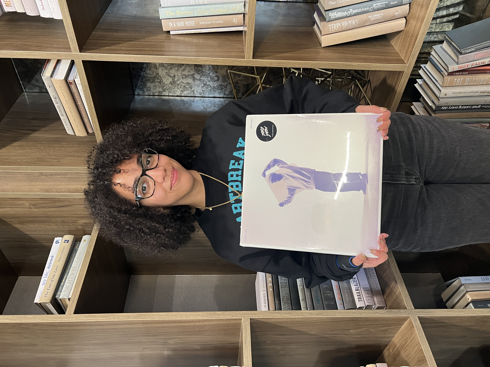
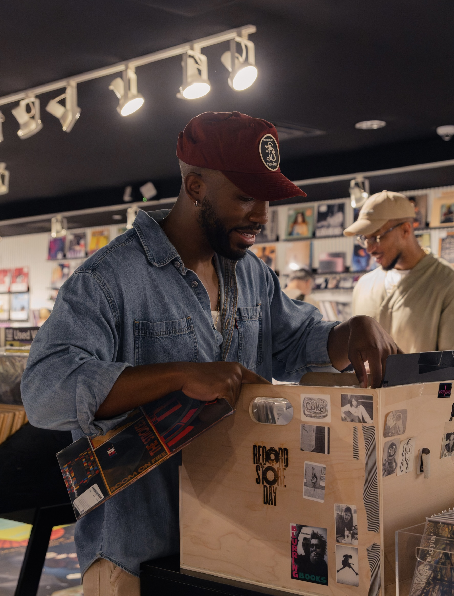

Meet the Club
Seven voices. One record at a time.

Paris
Paris brings a thoughtful perspective and a deep appreciation for the stories music tells.
Instagram
Flo
Flo brings curiosity, thoughtful insight, and a unique perspective to every conversation.
InstagramZeus
Zeus brings creativity, enthusiasm, and an appreciation for music that pushes boundaries.
Instagram
Harley
Harley brings thoughtful analysis, curiosity, and a perspective that always adds something new to the conversation.
Instagram
Marcus
Marcus brings an analytical ear, a deep appreciation for musical detail, and a unique ability to connect sound across genres and generations.
Instagram
Joely
Joely brings a bold personality, authenticity, and a genuine joy for music that shines through in every conversation.
Instagram
Gen
Gen brings an excitement for music of all kinds, a sharp ear for lyrical meaning, and a thoughtful understanding of the themes and identity behind an artist’s work.
Instagram
Noel
Noel works behind the scenes to support the conversations, shape each episode, and help bring the club's vision to life.
Instagram